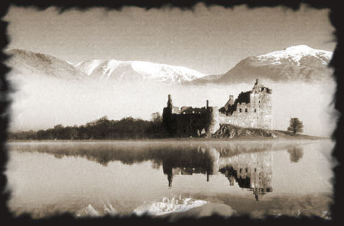
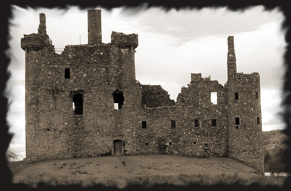
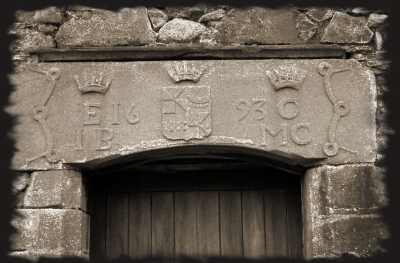

Eyewitness account from a young English couple who spend the night in the ruins of Kilchurn Castle:
After pitching our tent, I decided to go to the top of the main tower. When I got up there, I felt a presence in the room. I thought it was my friend, so I didn’t turn round. Then, slowly, an icy coldness seemed to seep through the thick, stone walls and penetrate the tower, and a pleading, worrying voice whispered: “Let me go. Please, help me to rest in peace.” I was frozen to the spot in fear. Then the voice was silent, the temperature went back to normal and I managed to pluck up the courage to turn around….but there was nobody there.
I quickly went back down again, and found my friend huddled against the wall. She had also heard strange voices which, in her own words, “came from another world”.
We ran away, petrified.
Kilchurn Castle is located on the banks of Loch Awe and at the foot of Ben Cruachan (1125m).

Built in 1420, it was extended in 1693, then abandoned in 1769 after being struck by lightning.

It was the first castle owned by the Campbells of Breadalbane, also known as the Campbells of Glen Orchy.
